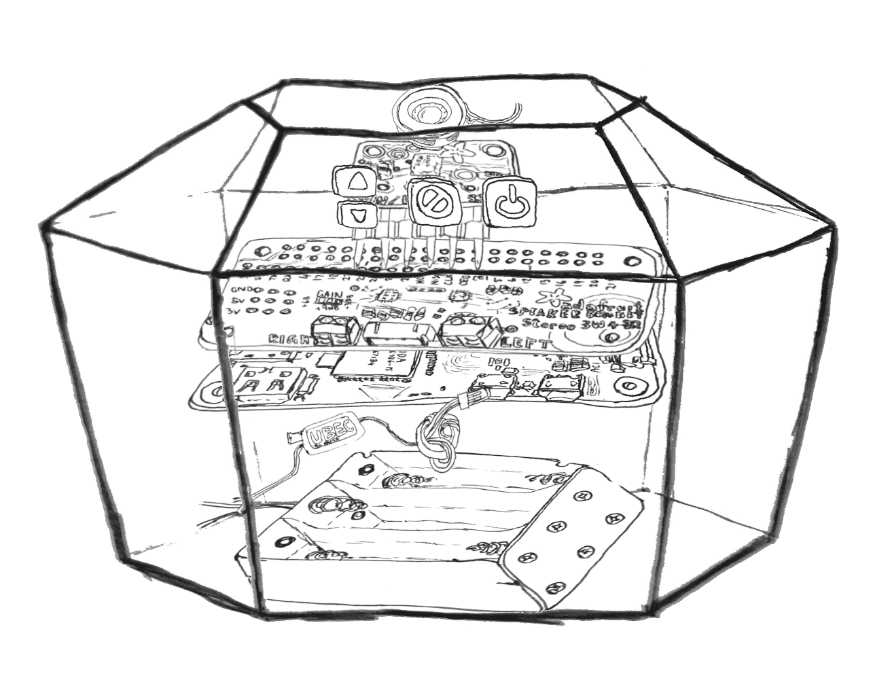

|  |
The Mimi-Boxa party game for everyone |
The Project OverviewThe Mimi-box is a party game that uses software not unlike voice recognition to compare player’s voices to each other’s, this is a game that’s all about mimicking other players to your best ability. The Mimi-box has an on-board pre-recorded voice that acts somewhat as a host, guiding and incentivising players on how to play the numerous game modes. Players will be put into situations where they must quickly think of something to say, their aim is to speak out a message or statement that the other players will be unable to reproduce, I.e. an accented message or a ridiculous joke that induces laughter. |
My MotivationStatistics taken in 2006 state that the average 15 to 34-year-old spends just under 3 hours with friends and 10 hours with their family each weekend. With the continuous popularity of tabletop and party games that facilitate the human need for social interaction, the Mimi-box concept falls into an underpopulated party game category which will cause it to stand out in the global market of party games from its base functionality alone. The Mimi-box is a tangible product that is easy to use and fun to pass around which fits into the fast and instant gratification focused entertainment industry of today. Furthermore, the Mimi-box is an ideal party game that can be used for multiple social gatherings from family game nights to business events as it requires the players to interact with each other, includes everyone, and doesn’t stop when alcohol is involved. |
Mimi-Box description
Gameplay:
|
In normal mode, each player is prompted to record a ‘message’ of their own choosing, after all players have provided a message the game will assign and require another player who will listen, then attempt to imitate it.
1 for all mode has one player record their message, and each additional player competes to see who can imitate with the highest accuracy.
Am I funny mode will give players a role play situation where they have to say the first thing that comes to their head, then another player is assigned to imitate it.
The game will play a sound effect while the raspberry pi calculates how closely the voices match using spectrogram graph and pattern matching technology, as the players only need to sound similar, this technology is sufficient. The voice match will be represented by a percentage and told to the players by the Mimi-box’s voice.
Messages can be statements, short jokes, accented sentences, or anything of the players choosing within a time frame of 10 seconds.
|
Tools and Technologies
Raspberry Pi Zero is the computer running this game, it uses the audio signal inputs and converts them into spectrograms, then runs a pattern matching system against the resulting images.
The Mimi-box uses the Adafruit 12S MEMS Microphone for sound input. A mini HAT, the adafruit 12S 3W Stereo Speaker Bonnet mini Kit, using 12S digital sound to create clear crisp audio. Saving power, the Mimi-box uses 1 mono 40mm diameter 4 Ohm 3-watt speaker.
The power is provided by a 6xAA battery pack connected via a universal battery eliminator circuit.
|
Skills RequiredWith the Linux based ‘Raspberry Pi OS’. It is feasible to find a developer with the skills required to build this software as there are many similarities with open source software available by Pi programmers. The plastic shell will be designed to allow streamline hardware installation and insolation which will be prototyped and manufactured. Specially written software includes the core game itself, the voice to spectrogram converter (the pi needs to temporarily store the spectrograms). A specialised pattern matching system to compare the spectrograms with a deliberate varying degree of slack and error. The microphone and pins require soldering to the raspberry pi and the product will require a recording speech from a voice actor. The Pi and Adafruit hardware are readily available to be purchased in bulk batches. |
OutcomeThe Mimi-box will become a household party game, social events will use the Mimi-box as a tool for inclusivity across class and culture barriers and use it as an ice breaker. Friends and families will meet for the purpose of playing this party game allowing them to fulfil their need for social interaction. Party games will be expanded in their vision to include new technologies not unlike voice recognition and other party game designers will be interested in this underpopulated game category. |
| Homepage | Job Goal | Personality Tests | References |